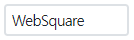
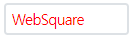
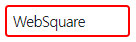

[컴포넌트 공통] 스크립트로 style 제어하기
1개요
컴포넌트의 style을 스크립트로 변경하는 예제입니다.
아래의 API로 CSS 속성을 제어 할 수 있습니다. - CSS 속성값 설정 : setStyle - CSS 속성값 반환 : getStyle - 초기 CSS 속성값으로 복구 : setInitStyle - 초기 CSS 속성값 반환 : getInitStyle
2구현된 기능
InputBox의 border-color 변경 하기
InputBox의 border-color 속성값 반환 받기
InputBox의 color 속성값을 복구하기
InputBox의 초기 style 값 반환 받기 - border-color
3예제 테스트 방법
3.1[공통] 로그 확인 방법
예제 영역 '로그 확인'의 textarea와 브라우저 개발자 도구의 콘솔에 실행 스크립트 및 결과 값이 출력됩니다.
Example 1.Log
[17:30:18] ** scwin.btn_ex1_onclick 실행 **
[17:30:18] ibx_exam1.setStyle("border-color", "red");3.2InputBox의 border-color 변경 하기
예제 영역 'style 할당하기'에서 테스트합니다.1
STEP 1: 'border-color 변경하기' 버튼을 클릭합니다.
Image 1.브라우저(Chrome) 실행 예시 - 초기 상태

2
STEP 2: 실행 결과를 확인합니다.
Image 2.브라우저(Chrome) 실행 예시

3.3InputBox의 border-color 속성값 반환 받기
예제 영역 'style 속성값 반환받기'에서 테스트합니다.1
STEP 1: 'border-color 속성값 반환받기' 버튼을 클릭합니다.
Image 3.브라우저(Chrome) 실행 예시 - 초기 상태

2
STEP 2: 실행 결과를 확인합니다.
'#ff0000'가 alert됩니다.
3.4InputBox의 color 속성값을 복구하기
예제 영역 'style 속성값을 초기 값으로 할당하기'에서 테스트합니다.1
STEP 1: '1. color 변경하기' 버튼을 클릭합니다.
Image 4.브라우저(Chrome) 실행 예시 - 초기 상태

2
STEP 2: 실행 결과를 확인합니다.
Input의 글자색이 붉은색으로 변경됩니다.
Image 5.브라우저(Chrome) 실행 예시
3
STEP 3: '2. color 속성값을 초기 값으로 할당하기' 버튼을 클릭합니다.
4
STEP 4: 실행 결과를 확인합니다.
Input의 문자의 색이 초기 설정 값으로 변경됩니다.
Image 6.브라우저(Chrome) 실행 예시

3.5InputBox의 초기 style 값 반환 받기 - border-color
예제 영역 '초기 style 속성값 반환받기'에서 테스트합니다.1
STEP 1: '1. border-color 변경하기' 버튼을 클릭합니다.
Image 7.브라우저(Chrome) 실행 예시 - 초기 상태

2
STEP 2: 실행 결과를 확인합니다.
Input의 테두리의 색이 파란색으로 변경됩니다.
Image 8.브라우저(Chrome) 실행 예시
3
STEP 3: '2. 초기 border-color 값 반환받기' 버튼을 클릭합니다.
4
STEP 4: 실행 결과를 확인합니다.
문자열 'red'가 alert됩니다.
4구현 예시
4.1InputBox의 border-color 변경 하기
'setStyle' 메소드를 사용하여 스크립트를 작성합니다. 세부 스크립트는 아래의 예시에 작성되어 있습니다.
Example 2.Script
//id가 ibx_input인 컴포넌트의 예시입니다. //border-color를 #e40a0a로 할당합니다. ibx_input.setStyle("border-color", "#e40a0a");
4.2InputBox의 border-color 속성값 반환 받기
'getStyle' 메소드를 사용하여 스크립트를 작성합니다. 세부 스크립트는 아래의 예시에 작성되어 있습니다.
Example 3.Script
//id가 ibx_input인 컴포넌트의 예시입니다. //inputbox의 border-color style 값 반환받기. var strRet = ibx_input.getStyle("border-color");
4.3InputBox의 border-color 속성값을 복구하기
'setInitStyle' 메소드를 사용하여 스크립트를 작성합니다. 세부 스크립트는 아래의 예시에 작성되어 있습니다.
Example 4.Script
//id가 ibx_input인 컴포넌트의 예시입니다. //컴포넌트의 초기 스타일로 복구합니다. ibx_input.setInitStyle("border-color");
4.4InputBox의 초기 style 값 반환 받기 - border-color
'getInitStyle' 메소드를 사용하여 스크립트를 작성합니다. 세부 스크립트는 아래의 예시에 작성되어 있습니다.
Example 5.Script
//id가 ibx_input인 컴포넌트의 예시입니다. //inputbox의 초기 border-color style 값 반환받기. var strRet = ibx_input.getInitStyle("border-color");
5주요 API
setStyle( propertyName , value )
getStyle( propertyName )
setInitStyle( propertyName )
getInitStyle( propertyName )